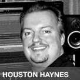

<?xml version="1.0" encoding="UTF-8"?><rss version="2.0"
	xmlns:content="http://purl.org/rss/1.0/modules/content/"
	xmlns:wfw="http://wellformedweb.org/CommentAPI/"
	xmlns:dc="http://purl.org/dc/elements/1.1/"
	xmlns:atom="http://www.w3.org/2005/Atom"
	xmlns:sy="http://purl.org/rss/1.0/modules/syndication/"
	xmlns:slash="http://purl.org/rss/1.0/modules/slash/"
	xmlns:itunes="http://www.itunes.com/dtds/podcast-1.0.dtd"
xmlns:rawvoice="http://www.rawvoice.com/rawvoiceRssModule/"
xmlns:googleplay="http://www.google.com/schemas/play-podcasts/1.0"

xmlns:georss="http://www.georss.org/georss" xmlns:geo="http://www.w3.org/2003/01/geo/wgs84_pos#"
>

<channel>
	<title>mixing &#8211; SCOREcastOnline.com</title>
	<atom:link href="." rel="self" type="application/rss+xml" />
	<link>http://www.scorecastonline.com</link>
	<description>Global Community for the Professional Media Composer</description>
	<lastBuildDate>
	Sun, 07 Apr 2019 10:06:34 +0000	</lastBuildDate>
	<language>en-US</language>
	<sy:updatePeriod>
	hourly	</sy:updatePeriod>
	<sy:updateFrequency>
	1	</sy:updateFrequency>
	<generator>https://wordpress.org/?v=5.1.1</generator>
<!-- podcast_generator="Blubrry PowerPress/7.4" mode="advanced" feedslug="feed" Blubrry PowerPress Podcasting plugin for WordPress (https://www.blubrry.com/powerpress/) -->
	<itunes:summary>Global Community for the Professional Media Composer</itunes:summary>
	<itunes:author>mixing &#8211; SCOREcastOnline.com</itunes:author>
	<itunes:image href="../../../wp-content/plugins/powerpress/itunes_default.jpg" />
	<itunes:subtitle>Global Community for the Professional Media Composer</itunes:subtitle>
	<image>
		<title>mixing &#8211; SCOREcastOnline.com</title>
		<url>../../../wp-content/uploads/powerpress/sig-SCO.jpg</url>
		<link>http://www.scorecastonline.com</link>
	</image>
<site xmlns="com-wordpress:feed-additions:1">29563098</site>	<item>
		<title>S. Peace Nistades: It&#8217;s Not Done &#8216;Til It&#8217;s Done</title>
		<link>../../../2010/04/28/s-peace-nistades-its-not-done-til-its/</link>
				<comments>../../../2010/04/28/s-peace-nistades-its-not-done-til-its/#respond</comments>
				<pubDate>Wed, 28 Apr 2010 20:30:00 +0000</pubDate>
		<dc:creator><![CDATA[SCO Editorial Staff]]></dc:creator>
				<category><![CDATA[Technology]]></category>
		<category><![CDATA[mixing]]></category>

		<guid isPermaLink="false">../../../?p=300</guid>
				<description><![CDATA[… One thing every project has in common is deadline and delivery. As I’ve been working on project after project, I’ve put a lot of thought into getting to that final phase as smoothly as possible for both myself and the client by looking at the entire process leading up to deadline and delivery. Something that has remained true about the process on most of the projects I’ve worked on is, it’s never done ‘til it’s done.]]></description>
								<content:encoded><![CDATA[<p><a rel="attachment wp-att-352" href="../../../2010/04/s-peace-nistades-its-not-done-til-its.html/sig-nistades"></a>Every project has its own unique flavor, its own unique experiences, but one thing every project has in common, is deadline and delivery. As I’ve been working on project after project, I’ve put a lot of thought into getting to that final phase as smoothly as possible for both myself and the client by looking at the entire process leading up to deadline and delivery. Something that has remained true about the process on most of the projects I’ve worked on is, it’s never done ‘til it’s done.</p>
<p>On many, in fact most, of the projects I work on, there will be some sort of final, last tweaks that happen just before it goes off to the dub stage, while the film is being mixed, or even right before the final mix gets printed and delivered to theaters. We hear stories of this all the time. My solution, along with my process of mixing-as-I-go, has been to have a unifying tool that can facilitate every aspect of my process thus keeping the final mix of the score within this one program.</p>
<p>For me, it’s Cubase. Most everything happens in Cubase for me, except the picture, which is housed in Pro Tools along with any dialogue/sfx/temp music cues. I have all my writing templates in Cubase, I do all my writing in Cubase, I record a lot of my &#8220;sounds&#8221; and final instruments in Cubase, I’ll add my own effects and plug-ins in Cubase as I go along, and when everything is finalized, I have my engineer come in and he does the final mix in Cubase. Heck, I’ve even thrown in an extra step in between me working on it and presenting the cue to the director. I’m very blessed to have my engineer working in the same building as I do, so before I present my demo to any client, I’ll have him come in to take a listen, maybe do a few tweaks on some sounds; not a full blown mix, but just to touch things up a bit, sonically. I do this to try and keep everything that the client hears as close to my original intention and close to what it will end up sounding like as possible (excluding our tweaks of course). As we all know, the quality of the demos we present on any project is a very crucial part of the process, and as my engineer and I have been working together on most of my films, we have a good mixing/working relationship where I know how he likes things prepped and he knows where I tend to go with a specific sound. When I’m presenting something, it really is the joint collaboration between him and myself, and it is very similar to how the score will end up sounding.</p>
<p>Remaining open until the very end has become a convention that is expected and required in today’s industry and, with all this technology at our disposal, it has made it a lot easier to uphold. I recently found an interesting interview with composer Klaus Badelt on his French film <em>Le Petit Nicholas</em> in which he describes a similar process where everything for him from the writing, recording to mixing happens in Logic. Everyone has their own preference, but the main concept remains very similar.</p>
<p>There are numerous of my own examples where we have been able to cater to last minute changes due to our work flow of having everything living within one program. However, this does not mean that I do not employ the use of other programs for specific purposes. Sometimes I use Ableton Live, Logic, Pro Tools, etc. but my main tool remains in one. On a psychological thriller I did, <em>Dark Woods</em>, we had delivered the final 5.1 mix of the score to the dub stage and I got a call a week or so later from the director asking if we could do some final tweaks. There were some musical/sonic elements I had done in some of the cues that he wanted in more scenes than we had originally spotted/written them to. So with all the midi/sound bytes/ audio stems/mixes there in front of me, I was able to be very flexible with the changes and it ended up helping the film flow better as well.</p>
<p>On a comedy drama (<em>Phil Cobb’s Dinner for Four</em>) I just recently finished, we revisited the score after several months of re-editing/color-grading to see where we were at and becauseI had everything right in front of me, it made it very easy to execute any changes or additions required. There was a lot of referral to the original suite I had written for the film and some segments we had originally deemed unfitting to the film ended up in several key moments of the film.</p>
<p>So with the increasingly shorter amount of time in which to deliver a score, does that change certain aspects of our process? How can we keep our doors open until the very end and still keep everyone sane and happy? What are your thoughts and experiences on this?</p>
<hr noshade="noshade" />
<div class="separator" style="clear: both; text-align: center;"><a style="clear: left; float: left; margin-bottom: 1em; margin-right: 1em;" href="http://4.bp.blogspot.com/_O4C7qpegzEY/S9I7L611fvI/AAAAAAAAAJk/pnkl9Wfukqs/s1600/sig-nistades.png"></a></div>
<p><em>Award-winning Thai film composer </em><em><strong>S. PEACE NISTADES</strong> (Sornsanti Nivasanont) has collaborated with such artists as Lisbeth Scott (</em><em>The Passion of the Christ, </em><em>Munich), Karen Han (</em><em>Pirates of the Caribbean: At World’s End, </em><em>Kung Fu Panda, </em><em>The Hurt Locker), Gingger Shankar (</em><em>Charlie Wilson’s War) and Grammy Award-winning artist Darlene Koldenhoven (&#8220;Yanni: Live at the Acropolis&#8221;).</em></p>
<p><em>Based out of their music production facility, Alkaloide Music, in Los Angeles, CA, Peace and his team have worked on projects in almost a dozen countries. You can learn more about Peace at his website, <a href="http://www.nistades.com/">Nistades.com</a>.</em></p>
]]></content:encoded>
							<wfw:commentRss>../../../2010/04/28/s-peace-nistades-its-not-done-til-its/feed/</wfw:commentRss>
		<slash:comments>0</slash:comments>
						<post-id xmlns="com-wordpress:feed-additions:1">300</post-id>	</item>
		<item>
		<title>Delivering Film and TV Music</title>
		<link>../../../2010/04/27/les-brockmann-all-about-delivery-for/</link>
				<comments>../../../2010/04/27/les-brockmann-all-about-delivery-for/#comments</comments>
				<pubDate>Tue, 27 Apr 2010 20:30:00 +0000</pubDate>
		<dc:creator><![CDATA[Les Brockmann]]></dc:creator>
				<category><![CDATA[Composition]]></category>
		<category><![CDATA[Delivery]]></category>
		<category><![CDATA[mixing]]></category>

		<guid isPermaLink="false">../../../?p=299</guid>
				<description><![CDATA[From a technical point of view, preparing music files for delivery according to your client&#8217;s requirements should be a pretty straightforward thing. Although every project is a little bit different, there are some standard procedures, and we&#8217;ll go over them, with some definitions, a few precautions, and one or two minefields. Before I get started, [&#8230;]]]></description>
								<content:encoded><![CDATA[<p><a href="../../../2010/04/27/les-brockmann-all-about-delivery-for/sig-brockmann" rel="attachment wp-att-355"></a>From a technical point of view, preparing music files for delivery according to your client&#8217;s requirements should be a pretty straightforward thing. Although every project is a little bit different, there are some standard procedures, and we&#8217;ll go over them, with some definitions, a few precautions, and one or two minefields.<span id="more-299"></span></p>
<p>Before I get started, it&#8217;s a good time to remind you that it&#8217;s always a good idea to ask your clients what their delivery requirements are. If the producer or director can’t tell you directly, they will refer you to a post production mixer or technician who will have all the answers.</p>
<p><a href="../../../2009/09/technical-guidelines-for-film-and-tv.html">In a past article</a>, I&#8217;ve gone over standard digital file issues, such as sample rate and bit depth. Review if needed. Of course you will be delivering finished mixes (or sometimes &#8220;stems&#8221;), not raw unmixed instrument tracks.</p>
<p>Since most postproduction work is done using ProTools, you will probably be asked to deliver in either a ProTools &#8220;session&#8221; file or at least something that&#8217;s easily imported into ProTools. Some composers are already equipped with ProTools software and hardware, but I wouldn&#8217;t say most are. So you might say, &#8220;Well, if I have to turn in something in ProTools, then how about if I just get a little cheap ProTools LE system?&#8221; But there&#8217;s a hitch — unlike its (expensive!) big brother ProTools HD, the LE systems do not support timecode, unless you pay extra for &#8220;post-production toolkit&#8221; features.</p>
<p>Let&#8217;s pause for a moment and review what our intent is here: you have prepared each piece of music to go at exactly a certain spot in the film, usually defined by a timecode starting number. Just because you are viewing the video in your DAW software (Logic, DP, etc.) doesn&#8217;t necessarily mean that the music will automatically go to the right place on the dubstage; someone needs to place it there in their DAW software, i.e. ProTools. An important distinction is that when you are in &#8220;composing work mode&#8221; you will have each piece of music in a separate file or chunk, but for the dub mix they will all need to be in one common &#8220;session&#8221; file.</p>
<p>For several years I&#8217;ve worked with composer Greg Edmonson on the show <em>King of the Hill</em> (Fox TV), and after the composing process in Logic, part of my job was to put all the mixes into ProTools for delivery. Here in brief is my workflow for that:</p>
<p>Each cue was mixed in Logic and then exported as a 24-bit 48K WAV file (either one interleaved stereo file or two mono files will work equally well, but stay tuned for one small hitch in this process). Then in ProTools HD those files were imported onto tracks, one at a time, and &#8220;spotted&#8221; to the right start location by timecode. It&#8217;s pretty common as I mix for the file I create to not start at bar 1 beat 1, but before, to accommodate instruments which may attack slightly early — so it&#8217;s important to keep a list of timecode starts for each file, which may be a different number than the music downbeat.</p>
<p>I usually use two stereo tracks (or sets of tracks), and alternate odd-numbered and even-numbered cues. This allows for any cues that may overlap each other at the start/end. Sometimes there is an additional track as well for source cues, which may be overlength.<br />
<span style="font-weight: bold;"><br />
No ProTools?</span><br />
So that&#8217;s pretty basic, but as I mentioned before, what if you don&#8217;t have a timecode version of ProTools? That&#8217;s when it pays to really know your clients, and figure out how to accommodate their needs. Some of my composer clients are able to simply deliver a folder of stereo files, with a list of timecode start numbers. There may be an editor who is willing to take a few minutes to drop the music in the right places. On a higher-budget gig that might actually be an official Music Editor, a professional who can be a tremendous help to a composer in many ways. Sadly, they are rare in lower-budget projects.</p>
<p>My colleague Randy Knaub writes about the <a href="../../../2010/04/randy-knaub-better-delivery-with-omf.html">use of OMF and AAF file formats</a>, and I&#8217;ll leave it to him to explain this. This allows you to use some other DAW software to create a file which should be compatible with ProTools. I have just a couple of reservations about this: if you do deliver this way then it&#8217;s important to have someone &#8220;on the premises&#8221; check the work and make sure everything has ended up in the right place. I would avoid any edits, punch-ins, fades, and automation. Those are not appropriate in a score delivery anyway. Also, in the ProTools world, the ability to open and accommodate these files is a paid option (and somewhat expensive depending on your point of view — another nice Digi/Avid wallet zinger), so check in advance to see whether your client can accommodate this.<br />
<span style="font-weight: bold;"><br />
Time stamping</span><br />
One thing that will help your music to go in exactly the right place is to use files that are time stamped. Most DAW apps can create and accommodate file time stamping. Then in ProTools the file can be easily spotted automatically to the intended location, avoiding the tedium of typing in all the numbers.</p>
<p>Digital Performer automatically and reliably adds time stamping to any WAV file, when your project file is set to the correct time start number and you record in real time. However, annoyingly, Logic will not. (Yes, I know they say it will, but I found that sometimes it correctly timestamps a WAV file and sometimes it doesn&#8217;t, with no predictable rhyme or reason. It&#8217;s a bug that has existed since Logic 6 or before; I’ve found this with more than one client under a variety of circumstances. In repeated inquiries I have found Logic tech support and local reps had no clue why and didn&#8217;t seem much interested. Ideas?)</p>
<p><span style="font-weight: bold;">File types NOT to use</span><br />
In previous articles I discussed file types, but it&#8217;s worth mentioning again that some computer compatible file types are not appropriate for professional production work: MP3 and AAC. These &#8220;lossy&#8221; file types are intentionally &#8220;shrunk&#8221; in order to make them easier to e-mail or transfer quickly through the Internet, but this is done by intentionally throwing away part of the sound data.</p>
<p>If you need to deliver over the Internet, this is a good place to use FTP or an iDisk; don&#8217;t compromise the music you&#8217;ve worked hard on by then compressing it to e-mail it. If you&#8217;re placing a piece of music downloaded from a service like iTunes, try to get an original copy CD instead, and extract an AIFF file from that.</p>
<p>It really makes a substantial difference in how good things sound. Maybe it’s a hassle, but if you are going to be committed to working hard to making your music sound great, then why not have those elements as good as they can be as well?</p>
<p>This may be a situation in which you educate your client as well. Suppose they ask you to send an MP3, or maybe send you one of some source music. On little speakers on a computer it probably doesn’t sound any different. But I promise you on the loudspeakers in a dubstage, or after broadcast processing, the difference in richness and punch will be substantial. Plus if there needs to be editing or EQ then an uncompressed file will respond better to that, with less deterioration. Like blowing up a photograph really big—do you see lots of blurry mushy pixels or is it detailed and focused even at large magnification?</p>
<p><span style="font-weight: bold;">Fight the bad</span><br />
For a variety of reasons, I hear a lot of music that doesn&#8217;t sound as good as I think it could or should, especially on television, sorry to say it. I know there are a lot of challenges.</p>
<p>We&#8217;ve all heard, and probably said, &#8220;It&#8217;s good enough for&#8230;&#8221;. Fill in the blank — For TV. For no money. For an impossible deadline. For those @#$%s who made me stay up all night to do five rewrites.</p>
<p>My humble suggestion: Fight the temptation. If you insist on quality, from the smallest detail like avoiding MP3s, to everything else, all the way to the top of your professional and personal &#8220;food chain&#8221;, you will feel better about your work, and others will notice. Isn&#8217;t that how you want to be?</p>
]]></content:encoded>
							<wfw:commentRss>../../../2010/04/27/les-brockmann-all-about-delivery-for/feed/</wfw:commentRss>
		<slash:comments>1</slash:comments>
						<post-id xmlns="com-wordpress:feed-additions:1">299</post-id>	</item>
		<item>
		<title>Delivery vs. Demo</title>
		<link>../../../2010/04/16/weekend-provocation-delivery-vs-demo/</link>
				<comments>../../../2010/04/16/weekend-provocation-delivery-vs-demo/#respond</comments>
				<pubDate>Fri, 16 Apr 2010 20:30:00 +0000</pubDate>
		<dc:creator><![CDATA[Lee Sanders]]></dc:creator>
				<category><![CDATA[Delivery]]></category>
		<category><![CDATA[mixing]]></category>

		<guid isPermaLink="false">../../../?p=292</guid>
				<description><![CDATA[Today's Provocation strays ever so slightly off our April theme, but I hope you'll follow along anyway. I'm going to lay out my some of my own ideas on turning delivered cues into <i>demo</i> cues. My overall opinion: if you want to put your best musical foot forward, there's work to be done. Potentially <i>lots</i> of work.]]></description>
								<content:encoded><![CDATA[<p><a href="../../../wp-content/uploads/2010/04/sig-sanders3.jpg"></a>Today&#8217;s Provocation strays ever so slightly off our April theme, but I hope you&#8217;ll follow along anyway. I&#8217;m going to lay out my some of my own ideas on turning <em>delivered</em> cues into <em>demo</em> cues. My overall opinion: if you want to put your best musical foot forward, there&#8217;s work to be done. Potentially <em>lots</em> of work.<br />
<a name="more"></a><br />
Let&#8217;s start here: when we&#8217;re delivering cues for a film mix, or even for network television, we tend to allow the dynamics to &#8220;breathe&#8221; much more than we would if we were producing them for an album release. In fact, I think the extra attention to mastering detail at the album stage is something that sets guys like Hans Zimmer and his Remote Control colleagues apart from many other established, respected composers… even A-list folks.</p>
<p>If you could hear, side by side, the album version and the &#8220;in-film&#8221; version of some of the Remote Control guys&#8217; scores, I suspect you&#8217;d notice <em>substantial</em> differences.</p>
<p>First off, the album-version cues are limited and tweaked to within an inch of their lives. The waveforms resemble what you&#8217;d see on commercial albums by recording artists… thick black blocks. A super-full sonic spectrum. This isn&#8217;t normally what you want to deliver to a dub stage—even in the fairly rare event you&#8217;re delivering full mixes in the first place.</p>
<p>So, for me, <strong>Step One is re-thinking the mix concept.</strong> That might mean going back to the original sequence file or Pro Tools session and starting more or less from scratch. In my view it&#8217;s worth it—the goal of what you&#8217;re creating at this stage is entirely different from its original purpose, so re-conceptualizing your mix makes a lot of sense. It also forces you to evaluate exactly which cues are worth the effort—sort of pre-selecting your favorites to go into the Demo Bin.</p>
<p>Along those same lines comes <strong>Step Two: editing for content.</strong> I think of a demo CD as a carnival ride… which the listener can get off of at any point. Your job is to keep them on that ride. Manipulate their attention span so that there&#8217;s something new and interesting every few seconds, while at the same time maintaining the overall musical integrity of the cue.</p>
<p>This is one of those areas where you can apply as much or as little time and energy as you have to spare. Honestly—by the time you experiment with different mixouts, different shapes, moving sections around in sequence, combining two or more cues into a single cue, etc., there are instances when you might as well start from scratch entirely (at least it often feels that way!).</p>
<p>Also, some cues just prove impervious to cutting. In those cases it&#8217;s time to make a command decision whether to accept the cue as-is or chuck it out of the Demo Bin entirely.</p>
<p>So… here&#8217;s one of the Big Questions people often debate: how long should a demo cue be? The answer is really a part of your own personal musical aesthetic—and I don&#8217;t know that, inside a certain reasonable musical-duration ballpark, there&#8217;s really a wrong answer. One of my own pet peeves is demos that contain only one loooong track (I&#8217;ve received a few). They&#8217;re gonna <em>make</em> me listen to that whole thing one way or another! Except, you know, I don&#8217;t. Filmmakers like to be able to fast forward if what they&#8217;re hearing isn&#8217;t interesting. It&#8217;s not a bad thing, I think, to give them the opportunity to do this (and thus to get to something they might like better!).</p>
<p>Next up: if your demo consists entirely of cues from a single project, you should take <strong>Step Three: considering track order</strong>, just as you would any other kind of demo CD. This may sound obvious, but I&#8217;ve had the following conversation on several occasions:</p>
<p><em><strong>Aspiring Composer:</strong></em><strong> </strong>&#8220;So… what did you think of my demo?&#8221;<br />
<em><strong>LHS:</strong></em> &#8220;Well, [other, unrelated comments]. And I would have put that first track later… maybe third. Take the fourth track and put it up front—&#8221;<br />
<strong><em>AC:</em></strong> (interrupting, slightly rudely): &#8220;—But the first track is the Main Title! The whole thing is in chronological order; I&#8217;m telling the story the way it was in the film—&#8221;<br />
<strong><em>LHS:</em></strong> (returning the favor with my own rude interruption): &#8220;—And I don&#8217;t care what the order was in the film. I think moving things around makes for a better ride.&#8221;<br />
<strong><em>AC:</em></strong> &#8220;Hmm.&#8221; (delivered in that tone of voice that means there&#8217;s no way this particular piece of advice is going to occupy any more of AC&#8217;s head space, and now AC is wondering where the nearest Starbucks might be located).</p>
<p>Do what you want with track order… but I encourage you not to set arbitrary limits. And I consider &#8220;that&#8217;s the way they appeared in the picture&#8221; to be arbitrary.</p>
<p>Finally, it&#8217;s time for <strong>Step Four: naming your cues</strong>. &#8220;1m21&#8221; isn&#8217;t gonna cut it, and unless you&#8217;ve already come up with something clever (say, in the spotting session), now&#8217;s the time to think of some really evocative titles. Again, for some reason people send me demos. The ones whose cue titles are most interesting tend to be the ones I&#8217;m most excited to hear. Simple as that.</p>
<p>If I read &#8220;Chase&#8221; or &#8220;Comedy,&#8221; I&#8217;m expecting something as generic and vanilla as its title suggests. I don&#8217;t mean to suggest that you have to put undue strain on your thesaurus for this, but it&#8217;s one of those attention-to-detail things that might make your demo ever so slightly more interesting to a listener… and that, in my opinion, makes it worth the stretch.</p>
<p>This weekend&#8217;s column isn&#8217;t intended to be my Last Word on making demos… but I hope it&#8217;s reminded you of how important it is to treat them as their own thing, rather than just copy/pasting your film-dub versions onto a CD playlist. The difference requires more effort and hassle—in some cases, a lot more—but it&#8217;s worth it.</p>
<p>If you have any other tricks or tips on this, let&#8217;s talk… hit the COMMENTS. Something I&#8217;ve left out? Something you disagree with? I&#8217;d love to hear it. SCOREcast is only as vital as we <em>all</em> make it!</p>
]]></content:encoded>
							<wfw:commentRss>../../../2010/04/16/weekend-provocation-delivery-vs-demo/feed/</wfw:commentRss>
		<slash:comments>0</slash:comments>
						<post-id xmlns="com-wordpress:feed-additions:1">292</post-id>	</item>
		<item>
		<title>DSP cards and the Universal Audio UAD 2</title>
		<link>../../../2009/12/21/dsp-cards-and-universal-audio-uad-2/</link>
				<comments>../../../2009/12/21/dsp-cards-and-universal-audio-uad-2/#comments</comments>
				<pubDate>Mon, 21 Dec 2009 22:30:00 +0000</pubDate>
		<dc:creator><![CDATA[Randy Knaub]]></dc:creator>
				<category><![CDATA[gear]]></category>
		<category><![CDATA[mixing]]></category>
		<category><![CDATA[studio]]></category>

		<guid isPermaLink="false">../../../?p=223</guid>
				<description><![CDATA[In keeping with this month&#8217;s theme of “Gear and Software”, I wanted to talk a little more about my number 1 &#8220;My Perfect 3&#8221; find: The Universal Audio UAD2 DSP Card. DSP cards for use in DAW’s have been around for a while now, predominantly starting with Digidesign and ProTools, then later came the UAD-1 [&#8230;]]]></description>
								<content:encoded><![CDATA[<div class="MsoNormal"><a href="../../../wp-content/uploads/2009/12/sig-knaub1.jpg"></a>In keeping with this month&#8217;s theme of “Gear and Software”, I wanted to talk a little more about my number 1 &#8220;My Perfect 3&#8221; find: The Universal Audio UAD2 DSP Card.</div>
<div class="MsoNormal">DSP cards for use in DAW’s have been around for a while now, predominantly starting with Digidesign and ProTools, then later came the UAD-1 card from Universal Audio and TC Electronics released the Powercore card around the same time. The Digidesign DSP cards used a proprietary TDM architecture that ran only in ProTools hardware and software. For the rest of us who did not have a spare 10-15K lying around to get into ProTools, we were left out.<br />
<a name="more"></a>When Universal Audio and TC Electronics released their native DAW versions of plugins that could run on their respective DSP cards, this definitely narrowed the gap and gave all levels of musicians and engineers the advantage of offloading plugins from the computers CPU to the DSP card to do the heavy lifting. Aside from the advantage of offloading the plugins to another DSP, the quality of the plugins has increased and the emulations of both vintage and current gear are nothing than stellar.</div>
<div class="MsoNormal">Universal Audio’s Analog emulation’s in my opinion are the best around. UA being the hardware manufacture of some of the best Analog hardware pieces on the planet did not hurt them in developing these plugins. Devices like the 1176LN compressor, the never forgettable Teletronix LA2A optical compressor, the LA3A, etc, are now available in multiple instance counts in your native DAW host of choice, Mac or PC, AU, VST and RTAS. (For more on Universal Audio’s history please check out their website: <a href="http://www.uaudio.com/about/history.html"><span style="font-family: Helvetica;">www.uaudio.com—history.html</span></a>)</div>
<div class="MsoNormal">The <a href="http://www.uaudio.com/products/uad/index.html">Universal Audio DSP</a> card (known as the UAD1) has been around for while and recently got an update in power capability (UAD2). This is one of the first third party DSP cards used to run plugins in native DAW hosts. Most people don’t know, but the original UAD1 card’s chip was actually a graphics chip, (GPU) that was used in some older computers motherboards. UA found a way to harness that DSP chip to run these plugins emulations in great quantity. They later released the ability to run up to 4 cards in a single machine or PCI chassis, significantly increase plugin counts.</div>
<div class="MsoNormal">Universal Audio originally started out with a limited set of plugins and now have ~50 of the <span style="font-family: &amp;quot;&amp;quot;;">world’s finest analog emulation plugins from Neve, Roland, BOSS, Empirical Labs, EMT, Fairchild, Harrison, Helios, Little Labs, Pultec, SPL, Teletronix and more.</span></div>
<div class="MsoNormal">The latest versions of the UAD 2 card, comes in four versions. The UAD2 SOLO Laptop, UAD2 SOLO, the UAD2 DUO and the UAD2 QUAD. These new cards use the latest SHARC <span style="font-family: &amp;quot;&amp;quot;;">21369 </span>DSP technology from Analog Devices.</div>
<div class="MsoNormal">The SOLO uses a single DSP chip, the DUO uses 2 DSP chips and the Quad as you can image uses 4 DSP chips.</div>
<div class="MsoNormal">You can see from this <a href="http://www.uaudio.com/support/uad/charts.html">chart</a> the new UAD 2 significantly increases the plugins counts across the board. The UAD2 quad card for example has the power of 10 original UAD1 cards in a single PCIe card slot. Using the Neve 88RS channel strip plugin, a single UAD2 Quad card can have 140 mono instances running on the card. Imagine having the power of a 140 channel Neve console in your studio, with EQ, and compression.</div>
<div class="MsoNormal">I currently use the UAD2 Quad card in my setup (2.8Ghz- 8 Core Mac Pro). The performance is incredible. I used to have 4 UAD-1 cards and was maxing them out for most of my mixes. Now with the UAD2 Quad card, I don’t even bother looking at plug counts. I just start applying the plugs that I use the most often to my audio and VI channels. As we don’t have time to review all of the plugins that are available on the UAD2 platform, I will list the top 10 that I use on a daily basis:</div>
<blockquote>
<div class="MsoNormal">1176LN</div>
<div class="MsoNormal">LA2A</div>
<div class="MsoNormal">Neve 1073</div>
<div class="MsoNormal">Pultec EQP-1A</div>
<div class="MsoNormal">EMT250</div>
<div class="MsoNormal">Precision Limiter</div>
<div class="MsoNormal">Fairchild 670</div>
<div class="MsoNormal">LA3A</div>
<div class="MsoNormal">Neve 88RS</div>
<div class="MsoNormal">Neve 33609</div>
</blockquote>
<div class="MsoNormal">The technology that we have access to today is sometimes so incredible that we simply take it for granted. In the old school days (my time <span style="font-family: Wingdings;"><span style="font-family: Wingdings;">J</span></span>), you did not have the ability to use 10 1176LN compressors in your mix. You only had one or two in the whole studio. These DSP cards and more importantly the plugins have given us access to some of the best analog gear made in digital form. I still stand by the less is more rule when it comes to using plugins, and the rule of garbage in garbage out still applies. Spend more time on getting a great sound prior to recording, and then use the plugins as you would a spice. I’ll have a little dash of salt please.</div>
<div class="MsoNormal"></div>
<div class="MsoNormal">I can highly recommend all of the plugins from Universal Audio. The have bundles so you can just purchase a specific vendor or category of plugins. Your mileage may vary but you will not go wrong using any of these wonderful sounding plugins.</div>
<div class="MsoNormal">Until next month,</div>
<div class="MsoNormal">Merry Christmas</div>
<div class="MsoNormal">Randy</div>
<p>_____________<br />
<em><span style="font-size: x-small;"><span style="font-weight: bold;">RANDY KNAUB</span> </span></em>is an audio engineer, producer, songwriter, keyboardist, and music technologist. He composes music and sound bites at his studio, <span style="font-style: italic;">Jireh Productions</span>, and works with local artists recording demos and CDs as well as pursuing corporate multimedia clients. Randy also consults for and beta tests for numerous music software and hardware manufacturers. His clients range from <span style="font-style: italic;">Martin Marietta</span>, <span style="font-style: italic;">McDonalds</span>, <span style="font-style: italic;">The United Way</span>, <span style="font-style: italic;">Colorado Lottery</span>, <span style="font-style: italic;">Visual Communications Group</span>, and <span style="font-style: italic;">Jeppesen</span>.<em> <span style="font-size: x-small;"><span style="font-style: italic;">You can find his SCOREcast bio (and links to his other sites) <a href="../../../2009/05/randy-knaub.html">here</a>.</span></span></em></p>
<div class="MsoNormal"></div>
<div class="MsoNormal"></div>
<div class="MsoNormal"></div>
<div class="MsoNormal"></div>
<div class="MsoNormal"></div>
]]></content:encoded>
							<wfw:commentRss>../../../2009/12/21/dsp-cards-and-universal-audio-uad-2/feed/</wfw:commentRss>
		<slash:comments>2</slash:comments>
						<post-id xmlns="com-wordpress:feed-additions:1">223</post-id>	</item>
		<item>
		<title>Personal Studio Acoustics</title>
		<link>../../../2009/12/15/personal-studio-acoustics/</link>
				<comments>../../../2009/12/15/personal-studio-acoustics/#comments</comments>
				<pubDate>Tue, 15 Dec 2009 22:30:00 +0000</pubDate>
		<dc:creator><![CDATA[Les Brockmann]]></dc:creator>
				<category><![CDATA[Technology]]></category>
		<category><![CDATA[mixing]]></category>
		<category><![CDATA[studio]]></category>

		<guid isPermaLink="false">../../../?p=218</guid>
				<description><![CDATA[The first hint was not being sure what was up with my bottom end. Not the one in the chair, the one in the speakers. I know, I&#8217;ve been there. In the chair, in front of the speakers. Spent a good part of my life there. I should know. I&#8217;m a mixer. (Sorry, went into [&#8230;]]]></description>
								<content:encoded><![CDATA[<p><a href="../../../wp-content/uploads/2009/12/sig-brockmann.jpg"></a>The first hint was not being sure what was up with my bottom end. Not the one in the chair, the one in the speakers.</p>
<p>I know, I&#8217;ve been there. In the chair, in front of the speakers. Spent a good part of my life there. I should know. I&#8217;m a mixer. (Sorry, went into Dragnet mode there!)<br />
<a name="more"></a>With keyboard, screen, mix controller in front of me,  and speakers outside of and behind the computer screen in a nice equilateral triangle with my head and ears, the mix is coming together pretty nicely. Got the harps and guitars panned and strings nicely textured with a good convolution reverb. But now — what about the bass? Why do the notes sound uneven, some booming and some receding? And why does the whole thing sound so much different on my other good living room speakers?</p>
<p><span style="font-weight: bold;">Non-gear</span><br />
So here we are, it&#8217;s December on SCOREcast, and the topic of the month is Gear and Software. I&#8217;m not always a contrarian, but I am going to be one right now. Everyone might like to hear what I have to say about the latest microphones, preamps, and software plugins, and I have plenty of ideas about those. But almost every musician I have worked with saves up his or her money and then invests in all kinds of screens, knobs, cables and boxes, but almost nobody has given any investment or attention to the acoustics of the room they&#8217;re working in, and how that affects the sound. Does it matter? You bet. Let&#8217;s take a look.</p>
<p><span style="font-weight: bold;">Physics 101</span><br />
We all probably sat through this in school; many musicians get glazed eyes when anything with math in it is mentioned. But it&#8217;s pretty simple: start with the fact that sound travels in waves, ranging in length from about 56 feet at 20 Hz on up to 7/10 of an inch at 20K Hz. Right in the middle, at 500 cycles, it&#8217;s 2.3 feet. And whenever a sound wave encounters a hard surface, such as the wall behind my mixing position, it bounces off like a rubber ball. Those reflections can interact with the waves coming straight out of the speakers, and either boost or cancel certain frequencies.</p>
<p>Of course music is made up of a wide variety of frequencies blended together, so the net results are complex. But the bottom line is what you hear isn&#8217;t necessarily what you get. Maybe the low end of the sound is hard to control and decide on, perhaps midrange sounds such as voices or orchestral instruments lack focus or take more EQ than they should, maybe your speakers don&#8217;t have a good deep and detailed stereo image. Maybe your woodwind or acoustic guitar overdub sounds like it was recorded in a bedroom (guess what?—it was!). All of these are ways in which your surroundings can negatively impact what you hear.</p>
<p>Actually there are two main concepts in acoustics that need to be attended to: how the surroundings inside your studio affect the sound of your speakers and of acoustic instruments you may be trying to record (room treatment), and also the issue of controlling sounds that may come in from the outside, which you probably don&#8217;t want, or your sound going out to bother the neighbors, which is also probably not ideal (sound isolation).</p>
<p><span style="font-weight: bold;">Getting started</span><br />
So what can you do about it? The topic is not that complex, but I&#8217;m afraid it&#8217;s a bit much for just a short article on a web blog, so I&#8217;m going to turn this into a book review. I have briefly mentioned it before, but I can&#8217;t say enough good things about a simple and extremely well written book: &#8220;<a href="http://www.amazon.com/Acoustic-Design-Home-Studio-Book/dp/159863285X/ref=sr_1_1?ie=UTF8&amp;s=books&amp;qid=1260822830&amp;sr=1-1%20">Acoustic Design for the Home Studio</a>&#8221; by Mitch Gallagher. This paperback will set you back less than $20, and it could be the best investment you could make for such modest money.</p>
<p>Gallagher really understands today&#8217;s project studio scene. He&#8217;s not going to make you wish you could afford a million-dollar custom building job (although don&#8217;t we all?), but goes over theory in a clear way and then tells you how to evaluate your present situation, and come up with a plan to improve it. He recommends off-the-shelf acoustic products that are affordable, and tells you how to use them, and also goes into detail about how to use everyday stuff that you may already have to fix up your acoustics for no cost whatsoever, if that&#8217;s what you need to do.</p>
<p>My home studio is not perfect yet, but with the aid of Gallagher&#8217;s book, I can get started. I have learned how to use the equipment I have to test the frequency response in my workspace, and have found some good alternatives on how to deal with it.</p>
<p>It&#8217;s tempting to go with a nice microphone preamp or a new PCI card system to support better plugins. But wouldn&#8217;t it feel good to be able to have the confidence that everything you record or mix and deliver sounds just the same everywhere it is played, just as you intended it to?</p>
<p>_____________<br />
<em><span style="font-size: x-small;"><span style="font-weight: bold;">LES BROCKMANN</span> </span>is a Los Angeles-based recording engineer and score mixer with over 20 years experience in television music, from NORTHERN EXPOSURE (CBS) to KING OF THE HILL (Fox), feature films including the award-winning documentary GHOSTS OF ABU GHRAIB (HBO) and the cult howler TRAIL OF THE SCREAMING FOREHEAD (Larry Blamire, dir.), and video games UNCHARTED 1 &amp; 2 (Sony/Naughty Dog). </em><em><span style="font-size: x-small;"><span style="font-style: italic;">You can find his SCOREcast bio (and links to his other sites) <a href="../../../2009/05/les-brockmann.html">here</a>.</span></span></em></p>
]]></content:encoded>
							<wfw:commentRss>../../../2009/12/15/personal-studio-acoustics/feed/</wfw:commentRss>
		<slash:comments>7</slash:comments>
						<post-id xmlns="com-wordpress:feed-additions:1">218</post-id>	</item>
		<item>
		<title>Sound Mixer David Fluhr on Disney&#8217;s &#8220;The Princess and the Frog&#8221;</title>
		<link>../../../2009/12/07/sound-mixer-david-fluhr-on-princess-and/</link>
				<comments>../../../2009/12/07/sound-mixer-david-fluhr-on-princess-and/#comments</comments>
				<pubDate>Tue, 08 Dec 2009 06:51:00 +0000</pubDate>
		<dc:creator><![CDATA[SCO Editorial Staff]]></dc:creator>
				<category><![CDATA[mixing]]></category>

		<guid isPermaLink="false">../../../?p=213</guid>
				<description><![CDATA[Join SCOREcast&#8217;s resident sound mixer David Fluhr and his team in this incredible look behind creating the sound world for Disney&#8217;s new animated feature film &#8220;The Princess and the Frog&#8220;. Starting January 2010, David will be sharing thoughts and perspectives from his career spanning 25 years as a re-recording mixer for feature film and television [&#8230;]]]></description>
								<content:encoded><![CDATA[<p><a href="../../../wp-content/uploads/2009/12/sig-fluhr.jpg"></a>Join SCOREcast&#8217;s resident sound mixer David Fluhr and his team in this incredible look behind creating the sound world for Disney&#8217;s new animated feature film &#8220;<a class="zem_slink" title="The Princess and the Frog" rel="imdb" href="http://www.imdb.com/title/tt0780521/">The Princess and the Frog</a>&#8220;.</p>
<p>Starting January 2010, David will be sharing thoughts and perspectives from his career spanning 25 years as a re-recording mixer for feature film and television in his new regular column here at SCOREcast.</p>
<p><object classid="clsid:d27cdb6e-ae6d-11cf-96b8-444553540000" width="400" height="225" codebase="http://download.macromedia.com/pub/shockwave/cabs/flash/swflash.cab#version=6,0,40,0"><param name="allowfullscreen" value="true" /><param name="allowscriptaccess" value="always" /><param name="src" value="http://vimeo.com/moogaloop.swf?clip_id=7934479&amp;server=vimeo.com&amp;show_title=1&amp;show_byline=0&amp;show_portrait=0&amp;color=&amp;fullscreen=1" /><embed type="application/x-shockwave-flash" width="400" height="225" src="http://vimeo.com/moogaloop.swf?clip_id=7934479&amp;server=vimeo.com&amp;show_title=1&amp;show_byline=0&amp;show_portrait=0&amp;color=&amp;fullscreen=1" allowscriptaccess="always" allowfullscreen="true"></embed></object></p>
<div class="zemanta-pixie" style="height: 15px; margin-top: 10px;"><a class="zemanta-pixie-a" title="Reblog this post [with Zemanta]" href="http://reblog.zemanta.com/zemified/29f0da2b-3930-437d-b5fd-fd302777defe/"></a><script src="http://static.zemanta.com/readside/loader.js" type="text/javascript"></script></div>
]]></content:encoded>
							<wfw:commentRss>../../../2009/12/07/sound-mixer-david-fluhr-on-princess-and/feed/</wfw:commentRss>
		<slash:comments>1</slash:comments>
						<post-id xmlns="com-wordpress:feed-additions:1">213</post-id>	</item>
		<item>
		<title>Working with Others</title>
		<link>../../../2009/10/26/mixer-collaboration-working-with-other/</link>
				<comments>../../../2009/10/26/mixer-collaboration-working-with-other/#respond</comments>
				<pubDate>Mon, 26 Oct 2009 20:30:00 +0000</pubDate>
		<dc:creator><![CDATA[Les Brockmann]]></dc:creator>
				<category><![CDATA[Industry]]></category>
		<category><![CDATA[collaboration]]></category>
		<category><![CDATA[mixing]]></category>
		<category><![CDATA[studio]]></category>

		<guid isPermaLink="false">../../../?p=176</guid>
				<description><![CDATA[I started out by scratching my head a bit, considering the topic of Collaboration. After all, there&#8217;s often only one engineer in the room, particularly in composer&#8217;s personal studio. But then, I figured, even in that case I&#8217;m certainly not working alone or in a vacuum. It&#8217;s almost impossible not to work with other people [&#8230;]]]></description>
								<content:encoded><![CDATA[<p><a href="../../../wp-content/uploads/2009/10/sig-brockmann.jpg"></a>I started out by scratching my head a bit, considering the topic of Collaboration. After all, there&#8217;s often only one engineer in the room, particularly in composer&#8217;s personal studio. But then, I figured, even in that case I&#8217;m certainly not working alone or in a vacuum. It&#8217;s almost impossible not to work with other people in this business, and who would want to? Here are some ways in which a score mixer collaborates with others.</p>
<p><span style="font-weight: bold;"> The Scoring Stage</span><br />
When called on to work in a commercial studio or scoring stage I almost always work as a member of a team. As an independent free-lancer, I am hired by the composer, and am the designated &#8220;team leader&#8221;; I&#8217;m in charge of the composer&#8217;s technical needs and interfacing with the staff of the studio.</p>
<p>I couldn&#8217;t do it without helpers, almost always provided by the stage or studio: setup personnel, an assistant engineer, most likely a recordist/Pro Tools operator. When those guys have their act together, it can really help the session go &#8220;like butter&#8221;, and a smooth technical experience in the studio is essential to success for the date. Everything has to be planned out in advance, set up perfectly, tested before the downbeat, and there can be no delays for technical problems. The best studios and stages earn their reputation for excellence by providing staff personnel who are uncompromising experts at this.</p>
<p>I also have my &#8220;horror story&#8221; list of studios where this kind of thing didn&#8217;t happen, where not to go back. In the ideal world of projects with nice big budgets, we would always record at top-notch places like Capitol or the studio stages, but that&#8217;s not always the case. A part of what I have to offer in helping composers record is my career-long experience in the various studios around LA, what they can do technically and, most importantly, whether their staff &#8220;gets it&#8221; and understands the world of scoring. Not all of them do. A few years back, on a low-budget film project, we booked a large room over in Burbank for a day of string recording. Because of various delays in setup, we got started almost an hour late. After an extremely tense day of recording, I expressed my disappointment to the manager, who replied, &#8220;We&#8217;ve been working with Joe Walsh recently — he books 10 a.m., usually shows up at noon, and we like it that way!&#8221; (If you want to know which studio, just call me.)</p>
<p>Unless it&#8217;s a &#8220;live mix&#8221; gig (see my <a href="../../../2009/08/live-mix-recording-two-television.html">SCO article</a> about live recording), most projects go back to the composer&#8217;s private digs or mine for mixing, and of course they started there as well with rough mixes, MIDI work, file prep, conversion, etc. That&#8217;s when the job for me may be a solitary one in the engineer department. But there are sometimes opportunities for engineer collaboration there as well, as was illustrated recently when I worked on an exciting Disney action-adventure score with composer Greg Edmonson.</p>
<p><span style="font-weight: bold;">Teamwork, Tag-team, and Sending a Sub</span><br />
It&#8217;s incredible how much work a composer has to do in a short amount of time, to meet a deadline on a film score. Burning the candle at both ends is old hat — how about both ends, the middle, several sides&#8230;? I take it as my responsibility to be a &#8220;safety net&#8221; for the composer, and make sure nothing gets missed in all the myriad of technical details that have to be attended to, even (especially) when the composer is sleep-deprived and desperately trying to get it all done on time.</p>
<p>Sometimes I consider the responsible thing to do is to ask someone to help out. If the composer needs an engineer to work both day and night, and I can recommend and train someone to continue with what we&#8217;re working on, I may make the suggestion to call in a &#8220;fresh horse&#8221;. Don&#8217;t get me wrong, I&#8217;m not opposed to working hard, but I think the ultimate goal should be for the success of the project (not just the maximum number of hours on my clock).</p>
<p>That situation didn&#8217;t come up on this particular project, but a couple of things did that were similar: after several days of work mixes and preparation, Greg and I went into a commercial studio to record strings and brass. In his personal studio, he uses Logic, but Pro Tools is almost always used in public studios, so there is file preparation and conversion needed, from one software to the other and back again, which takes time. The composer didn&#8217;t want to wait, the following morning, for tracks to be consolidated and exported from Pro Tools before he could bring them into Logic and start editing them to match the MIDI parts, because of the looming mix delivery deadline.</p>
<p>So I called on my old friend and expert engineer David Appelt. When we finished with strings, he met us at the studio and took away a hard drive copy to another Pro Tools system (mine) and exported string submixes from all 40 cues. By the time we were done with the evening brass date, he came back over and delivered the files. Teamwork!</p>
<p>There are other situations that require sending a good sub. An old buddy, John the studio guitarist, once told me a definition of the free-lancer&#8217;s life: &#8220;The good news is, I have three gigs this week; the bad news is, they are all Tuesday morning at 10 o&#8217;clock!&#8221; We all work for more than one client, and sometimes there is a schedule conflict. And, on rare occasions one must call in sick, which happened on this job. I haven&#8217;t had anything worse than the sniffles for probably five years or more, but got a little slammed during the mixing process; it was great to have David available to come in and sub a couple of days without missing a beat.</p>
<p>If I have to send a sub, I would never send him in &#8220;cold&#8221;; I always have a detailed conversation with the other engineer to bring him up to speed on all the technical details he will need to know — software, mixing board, outboard gear, patching, and any personal preferences the composer might take for granted. I&#8217;m not such a control freak that I would totally set things up in advance or micro-manage everything. I believe a good experienced engineer works best with his brain fully engaged, and if he has to figure out one or two things or make some setup decisions himself, this can be helpful.</p>
<p>What makes someone a good sub? Two things, plain and sample: one, he has to be reliable, technically and business-wise, that is, he shows up on time and knows how to do the job right. And, second, he doesn&#8217;t try to schmooze the client or steal the gig. This isn&#8217;t the time to yak about your website or latest big feature. You&#8217;d be surprised how some don&#8217;t get that part. It&#8217;s a small town; ethics and relationships matter.</p>
<p><span style="font-weight: bold;">Collaborating with the Composer</span><br />
Last but not least, as a mixer I develop a good collaborative relationship with the man or woman who brought me there, the composer.</p>
<p>Because of the time-intensive nature of what we do, a mixer may well be the one professional that has more &#8220;face time&#8221; with the composer than anyone else on the job, be they studio musicians, orchestrators, whatever. It&#8217;s a situation that requires a lot of trust, confidentiality, and discretion. Often a discussion will come up that is more than just whether the guitar or oboe is loud enough — &#8220;Do you think this works? Which do you like better? Does that instrument sound in tune?&#8221; and so forth.</p>
<p>I have a pretty good background as a musician, with experience in classical, jazz, and pop. I have never played or composed professionally, and have no ambition to do so; I&#8217;m truly happy in a supportive role. But as a composer gets to know me, he or she often will find it useful to have a musician to bounce performance questions, production ideas, and other things off of. I would never impose myself when unwanted, or argue. With some clients it&#8217;s strictly about the technical business at hand, and I&#8217;m fine with that. But I come to work with all my experience and talents available, and feel most useful when I can contribute whatever is necessary to making the project as good as possible.</p>
<p>That&#8217;s what it&#8217;s all about — when it ends up great everyone shines, and maybe we even get to do it again!</p>
<p><span style="font-style: italic;"><span style="font-size: x-small;"><br />
For more information about Les Brockmann, please visit <a href="http://lesbrockmann.com/">http://lesbrockmann.com/</a><br />
</span></span></p>
]]></content:encoded>
							<wfw:commentRss>../../../2009/10/26/mixer-collaboration-working-with-other/feed/</wfw:commentRss>
		<slash:comments>0</slash:comments>
						<post-id xmlns="com-wordpress:feed-additions:1">176</post-id>	</item>
		<item>
		<title>Better Mixing Through DAW Control</title>
		<link>../../../2009/08/13/speed-up-your-mix-with-daw-controllers/</link>
				<comments>../../../2009/08/13/speed-up-your-mix-with-daw-controllers/#comments</comments>
				<pubDate>Thu, 13 Aug 2009 21:00:00 +0000</pubDate>
		<dc:creator><![CDATA[Randy Knaub]]></dc:creator>
				<category><![CDATA[Technology]]></category>
		<category><![CDATA[mixing]]></category>

		<guid isPermaLink="false">../../../?p=112</guid>
				<description><![CDATA[Let&#8217;s talk briefly about DAW controllers and how they can help you in your workflow. You probably have heard of a few models from Mackie including the Mackie Control, and the HUI. Presonus and Frontier Design have entered the market with a single fader unit, and if you’re Houston Haynes you already use the SmartAV [&#8230;]]]></description>
								<content:encoded><![CDATA[<p><a href="../../../wp-content/uploads/2009/08/sig-knaub.jpg"></a>Let&#8217;s talk briefly about <a class="zem_slink freebase/guid/9202a8c04000641f800000000023d934" title="Digital audio workstation" href="http://en.wikipedia.org/wiki/Digital_audio_workstation" rel="wikipedia">DAW</a> controllers and how they can help you in your workflow. You probably have heard of a few models from Mackie including the Mackie Control, and the HUI. <a href="http://presonus.com/">Presonus </a>and <a href="http://frontierdesign.com/">Frontier Design</a> have entered the market with a single fader unit, and if you’re Houston Haynes you already use the <a href="http://www.smartav.net/tango/index.php">SmartAV Tango</a> controller. <a href="http://euphonix.com/">Euphonix</a> has also come out with two lower cost versions of their higher-end controllers, the System 5 and MC Pro. These lower cost versions, the MC Mix and MC Control offer a great deal of features for the price.</p>
<p class="MsoNormal">DAW controllers have been around for a few years now, but have increased in visibility more and more in project studios and composing rigs.</p>
<p class="MsoNormal">So, what <em>is</em> a DAW Remote Controller? As we started mixing more in the box, the desire to have more analog style faders to mix increased. Using a mouse became a pain for people used to using a real mixing console. Being able to mix via larger sized faders versus using the mouse became a necessity. Also the ability to control the transport functions (start, stop, record) and even control and automate parameters of plugins, enables you to improve your workflow. With that in mind, manufactures started producing these remote controllers that look like some kind of audio mixer but does not pass any audio. They offer various controls for your DAW parameters and transport functions giving you the simplicity of mixing in the box, the control of a stand-alone <a class="zem_slink freebase/guid/9202a8c04000641f800000000015377a" title="Mixing console" href="http://en.wikipedia.org/wiki/Mixing_console" rel="wikipedia">mixing board</a>, and the flexibility of the computer.</p>
<p class="MsoNormal">These controllers use various protocols to communicate. Mackie Control and HUI are the most common, as well as proprietary protocols such as Euphonix’s Eucon. These run over <a class="zem_slink freebase/guid/9202a8c04000641f80000000000282fe" title="Musical Instrument Digital Interface" href="http://en.wikipedia.org/wiki/Musical_Instrument_Digital_Interface" rel="wikipedia">MIDI</a>, <a class="zem_slink freebase/guid/9202a8c04000641f800000000003ed6d" title="Universal Serial Bus" href="http://en.wikipedia.org/wiki/Universal_Serial_Bus" rel="wikipedia">USB</a> and <a class="zem_slink freebase/guid/9202a8c04000641f80000000000149d0" title="Ethernet" href="http://en.wikipedia.org/wiki/Ethernet" rel="wikipedia">Ethernet</a>. Some controllers come in a single fader package and most others offer 4-8 channels. Most of the manufactures allow you to expand your control surface by connecting more of these fader units together, building larger 24 channel units.</p>
<div class="MsoNormal"><a style="clear: right; float: right; margin-bottom: 1em; margin-left: 1em;" href="http://www.flickr.com/photos/23755444@N00/2501620949"></a>I just recently in the last two months have started using both of the Euphonix models, the MC Control and the MC Mix, together in my studio. I love these things! Aside from having nice big faders to <a class="zem_slink freebase/guid/9202a8c04000641f800000000ad32db3" title="Audio mixing (recorded music)" href="http://en.wikipedia.org/wiki/Audio_mixing_%28recorded_music%29" rel="wikipedia">mix</a> with, I love the control and flexibility these units bring me in my workflow. Now, I have used other controllers in the past, so I am familiar with the overall effectiveness of having one to work with, but let me tell you a few things about these Euphonix models.</p>
</div>
<p class="MsoNormal">The Euphonix artist series has two models: the MC control, which is a motorized 4-fader touch sensitive model with a wonderful touch screen, and the MC Mix which features a motorized 8-channel touch sensitive unit without the touch screen. Both of these units use the Eucon protocol.</p>
<p class="MsoNormal">Eucon is a high-speed bi-directional Ethernet protocol. You hook these units up via Ethernet directly to your computers Ethernet port(s) or via an Ethernet switch. Speeds up to gigabit are supported. The Eucon protocol is 250 times faster than MIDI. Anybody who has experienced the dreadful MIDI logjam (when MIDI notes can’t be processed fast enough and they end up being fired almost like a machine gun after a period of delay) can testify that having a faster protocol to send data is a big plus. Eucon also offers 1024 steps of resolution versus MIDI’s 128 steps. This gives you more control of your fades with less zipper noise.</p>
<p class="MsoNormal">The Euphonix MC Control has a wonderful color touch screen and has 12 configurable soft keys that can be configured to use not only specific DAW functions, but also standard file-new, open, and save type commands. They also have bank buttons that let you skip faders in groups of 8. The MC Control also has 8 touch sensitive rotary encoders that can be assigned to control plugin parameters, panning, etc. The MC Mix has in addition to the 8 faders, 8 rotary encoders and 8 displays for surround metering, track names and panning.</p>
<p>The Euphonix system lets you expand up to 36 faders for the ultimate DAW mixing system.</p>
<p class="MsoNormal">Since the MC’s support the Mackie Control protocol, HUI as well as Eucon, they can virtually control any application that supports one of these protocols. These controllers work on both the Mac and the PC.</p>
<p class="MsoNormal">So as I mentioned, I have been using these controllers in my studio with both DP and Logic Studio 8 and recently Logic Studio 9, as Logic and DP both support the native Eucon protocol. After adding the controller, the DAW recognizes the MC and automatically maps your channels to the faders in the current session that’s loaded.</p>
<p class="MsoNormal">My productivity has increased greatly using these controllers. Having the ability to get to certain large groups of channels quickly, and having transport jog and shuttle controls are nice features. Being able to shuttle audio and MIDI back and forth for precise edits really helps. I use the soft keys to add new audio, MIDI and instrument tracks, and the faders are really nice. Having touch sensitivity allows me when working in Logic, to simply touch a fader and the corresponding Logic track gets selected.</p>
<p class="MsoNormal">For me, using the faders for gain riding my mixes is much easy and fulfilling than drawing it in with a mouse. I do use a mouse for very precise editing, but 90% of the time I am using the faders. I don’t know if I can put a quantitative number to the time I save using these controllers, but I feel myself working much faster. Maybe its just me, but something about having theses controllers in front of me makes me smile. Probably similar to the notion of making your work space an inviting and creative experience. When I sit down to work and these faders start flying around, I get to feel like I’m on the Big SSL 4K, which I have always dreamed of working on. LOL ……I know I am a total techno geek.</p>
<p class="MsoNormal">I highly recommend anyone not using a DAW controller to look seriously into getting one. It will greatly improve your workflow and give you the flexibility and control of mixing using large touch sensitive faders. Check out the tutorial and mixing videos on the Euphonix website for more information on these specific controllers.</p>
]]></content:encoded>
							<wfw:commentRss>../../../2009/08/13/speed-up-your-mix-with-daw-controllers/feed/</wfw:commentRss>
		<slash:comments>23</slash:comments>
						<post-id xmlns="com-wordpress:feed-additions:1">112</post-id>	</item>
		<item>
		<title>Houston Haynes: Producing Tracks You Can Trust Outside Your Studio</title>
		<link>../../../2009/08/12/producing-tracks-you-can-trust-outside/</link>
				<comments>../../../2009/08/12/producing-tracks-you-can-trust-outside/#comments</comments>
				<pubDate>Wed, 12 Aug 2009 08:00:00 +0000</pubDate>
		<dc:creator><![CDATA[SCO Editorial Staff]]></dc:creator>
				<category><![CDATA[mixing]]></category>

		<guid isPermaLink="false">../../../?p=109</guid>
				<description><![CDATA[This month we&#8217;re chiming in with our own insights and observations about and around television, and already there have been some great entries, particularly Jai Megan and James Olszewski cover a lot of valuable ground. As Jai so aptly put it, schedules can be insane &#8211; and James provided sage advice on dynamics and how [&#8230;]]]></description>
								<content:encoded><![CDATA[<p><a href="../../../wp-content/uploads/2009/08/sig-haynes2.jpg"></a>This month we&#8217;re chiming in with our own insights and observations about and around television, and already there have been some great entries, particularly <a href="../../../2009/08/how-to-not-compose-for-television.html">Jai Megan</a> and <a href="../../../2009/08/august-is-tv-month-at-scorecast-so-what.html">James Olszewski</a> cover a lot of valuable ground. As Jai so aptly put it, schedules can be insane &#8211; and James provided sage advice on dynamics and how it can make or break a cue. Combine the demands for high production value with incredibly fast turnaround and the pressure can really mount up as a the deadline approaches.</p>
<p>I ran into this situation myself when a friend gave me a call on a project a few years ago. He had sold an independent feature to a cable channel, and aside from editorial changes they wanted to make for TV, they also needed a new mix that would fit their broadcast specs. As usual, time was a factor. We had discussed re-scoring some of the music cues, but the schedule was so tight we decided to try and &#8220;fix it in the mix&#8221; before committing to a larger time line (and budget) that might have added an unnecessary headache. Fortunately, I was able to make some minor tweaks to match my system&#8217;s sound output to their specified range, and dialed in a mix quickly enough that we could sit back and make some creative decisions on the material that was already there &#8211; and got the project turned in (and on air) on time. What made this rabbit-out-of-a-hat gig possible? For me, a big part of it was having a well-designed room, properly calibrated speakers and the controls to turn on a dime.</p>
<p>Monitors and room acoustics are not all that hip or sexy, but they&#8217;re as important to getting (and keeping) the gig as the using latest sound library or the making the right industry contacts. Having the ability to quickly produce mixes that can survive intact in broadcast, theaters  and the web is critical to the success of the independent composer&#8217;s studio. I realized this twenty years ago when I made the transition from study of music composition and theory to electronic music and audio engineering. Fortunately, the tools, technology and resources today are much more advanced (and much cheaper) than they were back then &#8211; and even a novice can make noticeable improvements in their mixes with minimal effort. In this article I&#8217;ll point out a few things that I do to tame the acoustic madness of a one-room studio, and will point out a few resources along the way that you can use to improve your setup.</p>
<p>First and foremost, a composer has to be honest with him/herself in their ability to be objective about their work. It seems like a silly or trivial thing, but this one decision influences nearly every other decision he/she will make. It&#8217;s a step in the right direction to realize that your ego can influence your creative decisions, but the serious professional really needs to go further and realize that their ego can also misguide their purchasing decisions, which of course isn&#8217;t helped but the MI industry. I can&#8217;t count the number of times that I&#8217;ve walked into another composer&#8217;s studio and seen monitors that <span style="font-style: italic;">completely </span>out-size the room that they&#8217;re in. It&#8217;s almost impossible to create a decent sound from that type of setup &#8211; since that person will <span style="font-style: italic;">never </span>be able to run those speakers in their designed power band. So the signal to noise ratio is sub-optimal, the non-linearity in the speakers are more exaggerated &#8211; and in the end it&#8217;s wasted money (and likely mean wasted opportunities for the composer). Likewise, I&#8217;ve seen studios where either windows, artwork or mirrors were wreaking havoc with the sound of the room. Seriously, if you need a big mirror in your studio to see yourself in front of all that cool gear, you&#8217;re in the business for the wrong reason. Take a picture and use it as a screen-saver, and remove the mirror and artwork and replace it with acoustic treatment. Smooth parallel surfaces in a studio are the black plague of acoustics &#8211; and glass and mirrors can be the worst.</p>
<p>When considering your monitors, the most reasonable approach is to balance the size of your speakers to the size of your room. Instead of blowing a huge wad of dough on a set of gargantuan speakers that have &#8220;high client impression factor&#8221; take the money saved and spend it on a (relatively inexpensive) second small set of monitors as well as acoustic treatment and calibration equipment. Between my trusty Radio Shack SPL meter and <a href="http://www.behringer.com/en/products/ecm8000.aspx">ECM8000</a> calibration microphone, I have the ability to find out exactly what my room and speakers are <span style="font-style: italic;">and are not</span> producing, and at which levels. I&#8217;ve been using a combination of <a href="http://www.bobgolds.com/Mode/RoomModes.htm">online </a>and freeware utilities to understand the weaknesses of my room, but now there are several pre-calibrated tools that speaker vendors and others have put out on the market to help account for both your room and your speakers. <a href="http://www.ikmultimedia.com/arc/features/">IK Multimedia&#8217;s ARC</a> is one example of how cutting edge acoustic measurement technology is becoming more accessible. And some manufacturers are now putting compensation utilities right inside the monitor housing.</p>
<p><a href="http://2.bp.blogspot.com/_-qX4k73vO9I/SoIRgqa3yHI/AAAAAAAAAeU/jfvjOpvcBI0/s1600-h/09aug2009_scorecastonline.jpg" onblur="try {parent.deselectBloggerImageGracefully();} catch(e) {}"></a>It&#8217;s also really important to &#8220;get a second opinion&#8221;, that is, to have more than one set of monitors to check against the mix of your cue. This is especially important for broadcast and web-destined material, where the range of real-world playback systems can vary widely. One of the nice things about Nuendo is the Control Room function. I can set up multiple monitoring busses that allow the mix to be auditioned across several sets of speakers. In the picture you&#8217;ll see that I have both a 5.1 system and a stereo speaker set. Nuendo and the SmartAV console not only allows me to switch between them but also control the speakers in a way that lets me quickly isolate problems and check for potential compatibility issues. I can not only downmix a surround buss to stereo, I can also take a stereo mix to mono &#8211; and in the case of the 5.1 array I can put that mono signal into the center channel speaker. Anyone that has done a reasonable amount of mixing can tell you that a mono mix check across a phantom stereo field can give strange results, so being able to put it in a single speaker pointed right at the center of your forehead is the best option. And like it or not, television is still largely a mono-compatible medium. It&#8217;s always a little heartbreaking to listen to a carefully crafted surround mix get stuffed into one tiny speaker &#8211; but believe me, it&#8217;s always better to know what&#8217;s going to happen to your mix <span style="font-style: italic; font-weight: bold;">before </span>it gets out into the wild. It isn&#8217;t ever pretty, but at least you can make the best of it in your environment and find the problems before the producers do.</p>
<p>So as you can see &#8211; there&#8217;s a lot to know and always more to learn. Aside from going back to school to learn acoustics, there&#8217;s also a great deal of  expertise available online. There are a myriad audiophile and pro audio discussion forums that cover these topics, and companies like <a href="http://auralex.com/pcf/">Auralex </a>offer free  personalized room analysis and other forms of support. And believe it or not they&#8217;re not doing it to fill your room with foam and whatnot. They&#8217;ll help you to find out the exact type and amount of treatment, and where to place it in the room for maximum effect. You&#8217;ll be surprised how little acoustic treatment it takes to make a huge difference in the sound quality of a rectangular &#8220;bread box&#8221; shaped room.</p>
<p>One guerrilla tactic I was taught in school was to use the &#8220;mirror method&#8221; to deal with the biggest problem in small studios &#8211; first reflections. Take that mirror you just moved out of your room and have a friend run it flat along the wall as you sit and watch it from the listening position. If you can see your speakers in the mirror, then that&#8217;s a place where first reflections will get to you. Put treatment there first. <span style="font-weight: bold;">[Extra credit goes to those readers that have 1) read this far in the article, and 2) figured out that they should <span style="font-style: italic;">also </span>use the mirror method to place treatment on the ceiling of their studio to limit first reflections from there, too.] </span>Figuring out bass trapping is not as straight-forward, but it&#8217;s also a bit more forgiving. I was about to buy more bass traps for my studio, but I decided to wait until I got my new couch and re-calibrate. As it turned out, the couch (a plush leather love seat) is a great bass trap by itself, so now my studio is more comfortable and sounds better, too. The icing on the cake is that I didn&#8217;t have to spend any more money on acoustic treatment. The bottom line &#8211; be creative and use the resources that are out there. There&#8217;s a lot more to learn than this article can cover, but the good news is that you don&#8217;t have to do get a degree in acoustics to make an impact &#8211; and you don&#8217;t have to do it all at once. You can start with a small &#8220;project studio kit&#8221; and try different placement options with double-sided tape and push pins. Then once you have an arrangement that&#8217;s to your liking, you can make things more permanent. It may not seem like as much fun as going to the local music shop and blowing a wad of cash on a big set of new speakers, but at the end of the day your music will probably be better for it.</p>
<p>You&#8217;ve got the right speakers for your space and you&#8217;ve tamed the worst offenses that the room has to offer. That&#8217;s it, right? Well, not exactly. Now you have to set the levels of your monitors to accurately represent the power level of the music so that you can hear things as accurately as possible. I&#8217;ll explain by example &#8211; say that you are doing a loud rock-styled mix, and your speakers are wailing away with the dial &#8220;set to 11&#8221;. That might be fun for the five minutes before your ears start ringing/hurting/taking damage, but you&#8217;re actually doing yourself a disservice in more ways than one. Take that mix to a new venue and suddenly the cymbals seem crushed and the bass has lost its punch and heft. What happened? You&#8217;ve just fallen victim to the nature of the <a href="http://en.wikipedia.org/wiki/Equal-loudness_contours">equal loudness contours</a>, among other factors. Because the ear varies in sensitivity to high in low ranges across various sound pressure levels, you can be making decisions based on a perception that may not exist when the music is played at an average listening level. In our &#8220;loud&#8221; example above, the highs and lows get pulled during mixing because the ear perceives them as being louder by comparison to other ranges. The reverse situation can cause the same effect &#8211; when monitoring at too low of a level, a cue that&#8217;s played back &#8220;at level&#8221; in another venue suddenly has a boomy bass and the high end sizzles like bacon in a frying pan. <span style="font-weight: bold;">It&#8217;s mix mistakes like this that get a track kicked out of the audition pile and sent to the trash bin.</span></p>
<p><a href="http://4.bp.blogspot.com/_-qX4k73vO9I/SoEBx9O9orI/AAAAAAAAAdU/umJ5U8ceoO8/s1600-h/IXL_K-12.jpg" onblur="try {parent.deselectBloggerImageGracefully();} catch(e) {}"></a>So now what? Well there are two more tightly inter-related factors: 1) metering and 2) monitor volume. You have to be sure that what you see in the meters of your DAW actually represent what you&#8217;re hearing. In most cases composers think that as long as they&#8217;re managing peaks (and have no red-line &#8220;overs&#8221; in their mix) that they&#8217;re OK. Well, as it turns out, peaks are only part of the picture. It&#8217;s as important to keep an eye on the averages (among a handful of other factors) while you&#8217;re watching for &#8220;overs&#8221;. Through the years there have been <a href="http://www.shure.com/ProAudio/Products/us_pro_ea_vu">several approaches</a> to deal with measuring power in broadcast audio, and things have progressed quite a bit since the early days of analog meters. One approach that&#8217;s gaining wider acceptance is <a href="http://www.digido.com/about-us.html">Bob Katz&#8217;s</a> <a href="http://www.wikirecording.org/K_System">K-System</a> metering, which couples peak and average levels of a signal with a calibrated fixed monitor gain. This makes it fairly close to WYSIWYG mixing, with a few exceptions. This *also* means (which is most important to this article) that when you want to create a mix with more or less dynamic range, all you have to do is make a set adjustment to your meters and a counter-adjustment to the monitor levels and you&#8217;re ready to rock-and-roll. In my studio, I monitor mostly with the K-20 meter (the widest dynamic range, associated with film-level loudness curves) and then switch over to K-14 or K-12 when producing cues for television or mixing a song. The only counter-adjustment that I have to make on my monitors is to pull the Nuendo Control Room gain down 6 or 8 dB to compensate. This makes sure that the loudest part of the music is always in the same power range, which keeps it right in the C-weighted range of the equal loudness curve, and will translate to the most environments directly without modification.</p>
<p>Of course there&#8217;s a lot more to monitor that just the acoustic power of a track. There&#8217;s frequency, stereo placement, phase, and a host of other things that go into making sure that mix is &#8220;right&#8221;. You&#8217;ll see in the picture above that the RNDigital Inspector XL multi-meter not only has a level meter, but a spectrogram, and stereo position and correlation meters as well as a few other data points that help you to know what&#8217;s going on across the mix. You&#8217;ll notice in the screen shot that the low end is &#8220;in the red&#8221;. It&#8217;s not producing an &#8220;over&#8221; on the meters, so I&#8217;m relatively &#8220;safe&#8221; from one perspective. However, if I&#8217;m mixing for a broadcast, I might be concerned about how &#8220;hot&#8221; the signal is in that range, anticipating that it might not come across a set of cheap speakers that can&#8217;t produce those frequencies.</p>
<p>This might raise the question &#8220;so if you&#8217;re so good at this, why don&#8217;t you trust your ears enough to *not* use all this visual information?&#8221; Well, it&#8217;s complicated. For one, the information is presented as discrete aspects of the sound that the ears don&#8217;t necessarily hear at first pass (and in some cases, at all). It&#8217;s a way of seeing information before your ears to have a chance to perceive the problem (such as phase correlation that will become a problem when the signal is being mixed to mono) or outright saving your ears from having to listen through so many passes that fatigue begins to affect the perception of the sound. Even at relatively moderate (and calibrated) sound levels can cause a type of burnout that can change mix decisions for the worse. Getting <span style="font-style: italic;">more </span>information while the ears are fresh means that you can make better decisions faster, and save yourself the situation of later having to explain a <span style="font-style: italic;">bad </span>mix even though you&#8217;ve got a<span style="font-style: italic;"> </span>good room and monitors. [It has happened to all of us at one time or another.]</p>
<p>There are lots of options out there, and you&#8217;ll find as many people that are passionate about <span style="font-style: italic;">their </span>particular monitoring/metering approach as any sampling aficionado is about their favorite sound library. Fortunately, many DAW manufacturers are catching on to the growing baseline of awareness and are putting more &#8220;smarts&#8221; into the options of their software. So even if you&#8217;re not a hard-core mixer willing to spend money on a metering plugin (like me) then you&#8217;ll probably find some <a href="http://www.rndigitallabs.com/Plug-ins/Inspector/inspector.html">freeware </a>options that will do the job for most situations.</p>
<p><a href="http://www.digido.com/components/com_virtuemart/show_image_in_imgtag.php?filename=resized%2FMastering_Audio__48c690b8007c1_90x90.jpg&amp;newxsize=90&amp;newysize=90&amp;fileout=" onblur="try {parent.deselectBloggerImageGracefully();} catch(e) {}"></a>It takes a little bit of thought and study to get the hang of this topic area, but with a bit of real-world experimentation you can cover the most important ground relatively quickly. Along with the online resources linked throughout this article, you can also pick up a hard copy of Bob Katz&#8217;s <a href="http://www.digido.com/vmchk/shopping-cart/mastering-audio-by-bob-katz/flypage.tpl.html">Mastering Audio</a> which not only covers an amazing variety of subjects from the most basic to the most esoteric mixing considerations, but also provides solid advice on setting up and calibrating your monitors for master-quality accuracy. While it might seem like a steep hill to climb, the rewards are well worth it &#8211; better sounding music in a variety of playback systems, greater flexibility in the studio to set up for a variety of listening situations, and less ear fatigue and the ability to handle longer sessions with little effort. At the end of the day, having the ability to jump right into a project and trusting your speakers, your room and your ears to deliver a broadcast-ready cue is what it&#8217;s all about.</p>
<p>________________<br />
<span style="font-size: 100%;"><span style="font-weight: bold;">HOUSTON HAYNES</span></span><span style="font-size: 100%;"> <span style="font-style: italic;">was born an raised in the southeastern United States, and moved to Los Angeles in 2003 to pursue a career as a composer</span><span style="font-style: italic;">. </span></span><span style="font-size: 100%;"><span style="font-style: italic;"> You can find his SCORECast bio (and links to his other sites) <a href="../../../2009/05/houston-haynes.html">here</a>.</span></span><span style="font-size: 85%;"><span style="font-style: italic;"> </span></span></p>
]]></content:encoded>
							<wfw:commentRss>../../../2009/08/12/producing-tracks-you-can-trust-outside/feed/</wfw:commentRss>
		<slash:comments>23</slash:comments>
						<post-id xmlns="com-wordpress:feed-additions:1">109</post-id>	</item>
		<item>
		<title>Tame the Template</title>
		<link>../../../2009/06/11/tame-template/</link>
				<comments>../../../2009/06/11/tame-template/#comments</comments>
				<pubDate>Thu, 11 Jun 2009 20:00:00 +0000</pubDate>
		<dc:creator><![CDATA[Randy Knaub]]></dc:creator>
				<category><![CDATA[Technology]]></category>
		<category><![CDATA[basics]]></category>
		<category><![CDATA[mixing]]></category>

		<guid isPermaLink="false">../../../?p=50</guid>
				<description><![CDATA[Every month I will be talking about the technology that we work with on a day to day basis as well as some tips on how to make your experience writing and composing music as easy as possible without letting the technology get in the way. These techno toys we deal with can be very [&#8230;]]]></description>
								<content:encoded><![CDATA[<p><a href="../../../wp-content/uploads/2009/06/sig-knaub.jpg"></a>Every month I will be talking about the technology that we work with on a day to day basis as well as some tips on how to make your experience writing and composing music as easy as possible without letting the technology get in the way.</p>
<p>These techno toys we deal with can be very intimidating at times. Some of us are just not that technical and we don’t want to be, while others love combing through the manual and look forward to the challenges of taking on a new piece of gear. (In a future issue we will talk about GAS (Gear Acquisition Syndrome).</p>
<p>So what exactly do we have to deal with in our studios on a daily basis? Computers, mixing consoles, DAW controllers, audio interfaces, microphones, patch bays, word clock generators, stereo recorders, MIDI interfaces, MIDI sound modules, and not to mention all the different pieces of software you may use. And, let’s not forget our countless connections: Analog, Digital, MIDI, Ethernet, Video, Internet, etc. If you’re Deane, you probably have a fiber optic cable connected to your forehead as well.</p>
<p>When you sit down with pencil and paper, notation software, or your DAW, you want to turn on your right brain and go to it without thinking “is this hooked up correctly, how come I can’t hear the percussion tracks, and why are the lights dimming around my neighborhood.” (Unless, that is your mood lighting.)</p>
<p>Joe Trapanese mentions in his <a href="../../../2009/06/composer-as-producer-maximizing-your.html">column</a> that using templates is key to kicking your project off on the right foot. I have to agree that these are probably one of the most significant timesavers and methods to improve your creative muse.</p>
<p>So let’s talk specifically about the template in your sequencer or DAW. This template is really nothing more than a blank session that you have pre-configured to have all of your tracks/channels, routing, groupings, stems, and effects laid out in a way that makes your workflow smooth. Some composers use predominantly MIDI tracks and few audio tracks, while others use more audio tracks than MIDI. I have composer friends who may have separate tracks for every piece of the orchestra, percussion, and separate drum tracks. This can easily put you over 100 tracks. Do you need just a few key orchestral instruments? Are you composing with guitar and perhaps need 4-6 audio tracks as well? These are some of the questions to ask. How do I work best? What is the end result? A full mockup score to be redone later on during the scoring stage, or is this a lower budget piece that will use everything as played in your DAW. Whatever your result, start by adding these tracks to your blank template.</p>
<p>Before you do this, I recommend you sit down and spend a few hours or more laying out how you typically score and what are the technical logistics of your studio.</p>
<p><span style="font-weight: bold;"><br />
Start with a list like this:</span></p>
<p><span style="font-style: italic;">Small Orchestral Pop Template</span></p>
<p>* 5 external MIDI modules with stereo outputs using 2 MIDI channels on each module<br />
* One GigaSampler with 16 MIDI and16 digital audio outputs via ADAT<br />
* 10 internal Soft synths fed to outputs 1-4 on audio interface<br />
* 8 audio channels in DAW for loops, FX, etc.<br />
* All audio outputs run to external mixer<br />
* Mixer control levels and control room monitoring<br />
* Mixer feeds DAW inputs 1-2 for mixdown</p>
<p>A list similar to this can help you visualize exactly what you have and how things need to be connected and laid out in your DAW. Remember, the goal is to make things easy and simplistic.</p>
<p>From here, start to build out your template by adding tracks and testing them. Make sure your MIDI routing is correct and that you can hear the correct synths, soft synths, etc. If you are using a more complex setup, i.e. multiple computers and MIDI over LAN, these things take time to set up and trouble shoot if you encounter problems. So again, give yourself some time to be able to work out the kinks. You’re a composer – you don’t care that you may need an Ethernet crossover cable instead of a straight through, but your gear does.</p>
<p>Make sure to save your template after every modification.</p>
<p>If you’re using a soft sampler, make sure you have the instances loaded and a stereo or multiple output version configured. If you are pre-loading samples, then load them to their associated channels and test the MIDI and audio routing. (In a future issue we will talk about getting samplers to run outside of your DAW and the 32-bit memory limitation.)</p>
<p>If you are using any type of stems or sub groups, get those added in, and make sure your internal audio buses are working correctly. (Tip: Use a pre-recorded audio test tone on your tracks (audio) to test the audio outputs as well as aux and group busing.)</p>
<p>Add any internal or even external effects to your aux sends, individual tracks, groups, etc.</p>
<p>So we have our template saved with all of our tracks, groups, synths, samplers and effects. One last and very important thing we need to do is validate that your CPU is worthy of your template. One thing I like to do as a test is, using a stopwatch, time how long the template takes to open. If you have many soft samplers in your template and they are loading samples, this could take a while depending on your drive speed and whether you’re using RAID or not. This seems trivial but is actually quite useful if you know it takes 3 minutes to open, you could go get a cup of coffee or a glass of wine, while you’re waiting. This time is also important to know if you have to make any changes to the audio system settings. In Digital Performer for example, every time you open and close the audio driver settings, or change the buffer size, DP must reload the entire contents of the project, so count on another 3 minutes. This can definitely steal your Mojo. This I know first hand as I am currently in DP therapy for cursing at the computer screen during this time.</p>
<p>Record some MIDI and audio data to make sure the CPU can handle all you’ve just asked it to. You may have to change your buffer while recording and again during playback based on the speed of your system, at which point you can join me in therapy. </p>
<p>So once we have our template finalized and working, we can now start writing that award winning Opus without the gear potentially getting in the way and blaming your soft synth for ruining your Oscar nomination.</p>
<p>Now some of you might be thinking about our good friend Murphy, and saying sometimes he likes to visit at the worst of times. Well, my fellow SCOREcasters, I can&#8217;t save you from Mr. Murphy, but I can tell you that by going through this exercise of building your template you’ll have a better understanding of how things are connected. You’ll have documentation and maybe even some type of drawing showing your connections. In the end, this should help you, if….. sorry I meant when you need to troubleshoot your studio setup.</p>
<p>Share with us tips on your templates.</p>
<p>Until next time, happy composing.</p>
]]></content:encoded>
							<wfw:commentRss>../../../2009/06/11/tame-template/feed/</wfw:commentRss>
		<slash:comments>10</slash:comments>
						<post-id xmlns="com-wordpress:feed-additions:1">50</post-id>	</item>
	</channel>
</rss>
